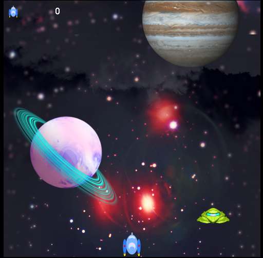
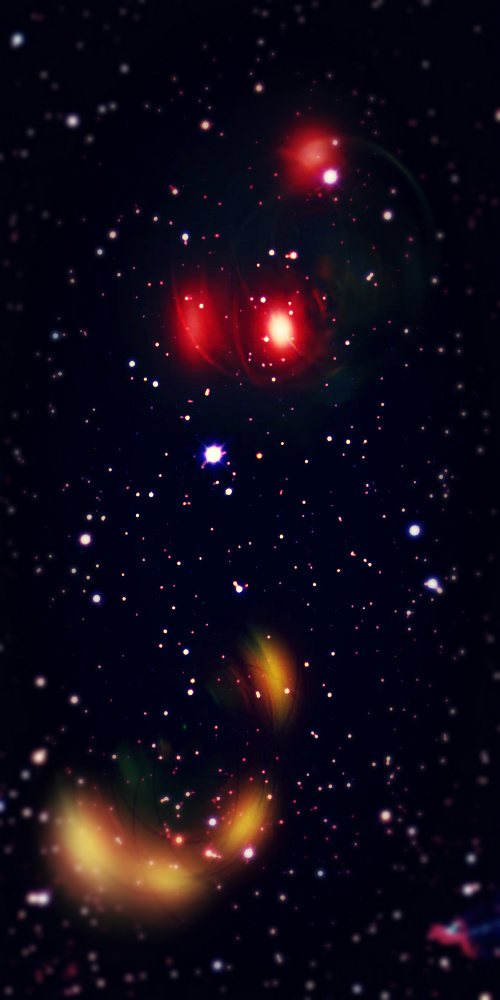
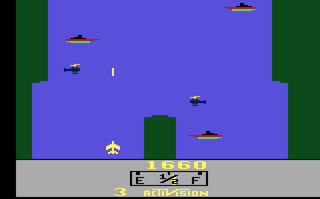

Alien War
Postado em Julho de 2018, por Fernando César e Luís Henrique.
Resumo: Utilizando tecnologia Canvas, presente em HTNL5, podemos criar jogos simples e divertidos para navegadores. No planejamento propusemos a ideia de jogo que queríamos, baseado em games clássicos. Nos modelos de documentação de game design apresentamos todos os conceitos que nosso game shoot ‘em up possui. Nosso modelo de documentação técnica traz de forma mais detalhada a construção técnica do nosso jogo. Nos detalhes das classes do jogo explicamos como cada classe usada foi utilizada na construção do game. E o resultado final é um excelente game passatempo.
Clique na imagem para jogar.
Para ver a documentação em pdf, clique aqui.
Documentação
- Planejamento
Foi pensado em algo simples, pois o prazo era curto, então lembramos de um clássico do mundo dos games da era do Atari, o River Raid, que nos serviu de inspiração para o nosso game, mas ao invés de um avião atacando inimigos em um rio, foi uma nave atacando inimigos de outro planeta. - Modelos de Documentação
Nosso trabalho utiliza três modelos de documentação para as três fases do projeto:- Um modelo de documentação conceitual, elaborado na fase conceitual;
- Um modelo de documentação de design, criado na fase homônima; e
- Um modelo de documentação técnica, elaborado durante a fase de produção (implementação e testes) do jogo.
-
Modelo Conceitual
- Introdução: o game é uma representação visual e interativa de uma grande aventura espacial, utilizando uma estrutura de game 2D.
- Descrição: o principal objetivo do game é fazer uma nave sobreviver durante um ataque de naves alienígenas. Nossa nave tem a habilidade de atirar e destruir naves inimigas, além de desviar dos oponentes, gerando uma pontuação para o jogador.
- Elementos-chave: o fascínio que o público tem com o espaço é o principal atrativo do game, que utilizar um visual pulp sci-fi para chamar a atenção de quem está jogando. Além disso as mecânicas são simples e fáceis de serem assimiladas por qualquer pessoa.
- Gênero: shoot ‘em up;
- Plataforma: browser de internet.
-
Modelo de Design
Este modelo está dividido em quatro partes, são estas: Mecânica, interatividade, narrativa e sons, que são tratados a seguir.
-
Seção “Mecânica”
A seção mecânica aborda os seguintes aspectos:- Jogabilidade: o jogador controla uma nave, que tem a habilidade de desviar e atirar em naves alienígenas;
- Regras e Física do Jogo: o jogador começa com três vidas, e utilizando uma movimentação para frente, atrás, esquerda, direita e diagonais, o jogador pode desviar dos oponentes. Se uma nave inimiga acertar o jogador, a nave explode, perdendo uma vida. O jogo acaba quando o jogador perder todas as vidas;
- Elementos da Jogabilidade: o jogador conta em seu arsenal com a habilidade de atirar em naves alienígenas, destruindo-as caso consiga atingir;
- Comportamento Inimigo: os inimigos surgem de forma aleatória na parte superior da tela, tendo a velocidade randômica, gerada por códigos randômicos para ter esse desafio extra.
-
Seção “Interatividade”
Esta seção aborda seções relativas à navegação e construção da jogabilidade do jogo, contendo uma visão do funcionamento geral da interface, esboço de telas de menu e de transição e detalhamento da interface do jogo:- Visão Geral da Interface: o mouse somente é utilizado para clicar em ‘Jogar’ no menu inicial ou tela de Game Over. Toda a jogabilidade seguinte é por meio do teclado. As setas servem para a movimentação da nave: apertando esquerda, direita, atrás e frente serão os exatos mesmos movimentos que a nave fará na tela. Apertando frente ou atrás ao mesmo tempo que esquerda ou direita, fará a nave mover-se de forma diagonal. Pressionando “Espaço” a nave atira, e pressionando a tecla “Enter” pausa o jogo;
- Navegação: Explicação sobre telas de transição está no diagrama de atividades da figura 2.
- Esboço de Telas de Navegação: A imagem de fundo do jogo (uma constelação do espaço) é a mesma imagem que faz o fundo da tela inicial, que é a imagem da figura 3 que está logo abaixo;
- Interface: a interface do jogo é composta por várias imagens em .png com fundo transparente, o fundo é composto por uma imagem de fundo, mais uma no meio e uma mais a frente, compondo a imagem de movimento do personagem, isso é, o personagem não se move sozinho, é o fundo que está em movimento dando a impressão do personagem se mover sozinho.

Figura 2: Diagrama de atividades demonstrando a tela de jogo.
Figura 3: Imagem de fundo, mesma imagem no jogo e na tela inicial.
-
Seção “Narrativa”
Nosso jogo foi influenciado na Era de Ouro da Ficção Científica (também conhecida como pulp sci-fi), que é de um período do final da década de 1930 e início dos anos 1940. As histórias dessa época valorizavam narrativas lineares, heróis resolvendo problemas ou antecipando ameaças em um estilo space opera ou de aventura tecnológica. A narrativa do jogo é basicamente visual, onde é exibido uma guerra entre a nave da Terra contra naves alienígenas. Sem qualquer inserção de diálogos ou texto, fazemos com que o jogador leve sua imaginação a diante e crie sua própria história. -
Seção “Sons”
Os sons são baseados em som de explosão, do tiro e uma música de ação, para tornar mais imersivo o jogo. O funcionamento dos sons é muito simples, quando o jogo é iniciado a música inicia e fica em um loop, para que ela toque enquanto o jogo estiver sendo jogado, quando o jogador parar ou o jogo terminar a música para. Os outros sons só devem ser tocados em certas situações, como a explosão, que ocorre quando alguma nave é explodida. Quando houver uma explosão o som é automaticamente reproduzido. Mesma coisa o som de tiro, quando a tecla for pressionada e houver o tiro o som é reproduzido também.
-
Seção “Mecânica”
-
O Modelo de Documentação Técnica
Este modelo irá trazer mais detalhado a construção do jogo, trazendo a mecânica, interface e gráficos. Estes tópicos são detalhados a seguir.-
Mecânica
- Plataforma: PC, utilizando browsers com HTML5.
- Ferramentas externas: Sublime Text e Notepad++ para códigos, PhotoShop, Gimp e Inkskape para imagens, Google Chrome, Opera, Mozila Firefox e Microsoft Edge como navegadores usados.
- Componentes do Jogo: O jogo é composto por: um arquivo .html e 10 arquivos de java script. O html é onde se encontra o código que executa o jogo em navegadores. Nos arquivos de java script estão todas as mecânicas do jogo, sendo cada arquivo uma determinada tarefa executando funções diferentes. As várias classes estão representadas o diagrama de classes da figura 4.
-
Regras e Física: A física do jogo é toda baseada no que as ferramentas usadas podem nos oferecer, são elas o html5 e o java script. Eles não oferecem uma engine de jogos, então tivemos que criar uma, usando de cálculos baseados nas imagens em formato .png de fundo transparente se movendo.
O fundo ficou composto por três imagens em movimento se repetindo, para dar a impressão de estar tudo se movimentando. As velocidades das imagens de fundo ficaram assim: a imagem do espaço, posicionada atrás, está em 60, a imagem das estrelas e planetas, posicionada entre as outras duas, está em 150 e a imagem de nuvens, posicionada em frente, está em 500. A velocidade é relacionada em pixels que as imagens irão se mover na tela, sendo assim, quanto maior o número mais rápido irá se mover.
A nave do jogador é, como todo o resto, uma imagem .png de fundo transparente, porém ela possui algo diferente do resto, ela é uma imagem composta por várias imagens no mesmo arquivo, ela é assim para se usar de uma ferramenta do java script chamado de SpriteSheet. Com o SpriteSheet é possível fazer a movimentação da nave do personagem, para isso é preciso que na imagem da nave tenha todas as imagens de cada movimento que pode ser executado no jogo, como o fogo que sai das turbinas, tanto fraco quanto forte. Para que os códigos funcionem na imagem e ela fique se alternando, o tempo necessário para que a imagem se atualize e faça a animação está em 100 milissegundos, isto é, a cada 100 milissegundos o sistema busca a posição da imagem em que o fogo está forte e inverte pela que o fogo está fraco e vice-versa. Mas esta imagem não possui apenas isso, há ainda as posições em que a nave está virando para a esquerda e outra para a direita, e ambas possuem tanto a posição que o fogo está forte quanto fraco, no total são 6 imagens no mesmo arquivo. Assim, no final, quando o usuário apertar a seta da esquerda a nave irá parecer estar curvada para a esquerda e o fogo continua mexendo, e isso acontece também para a direita.
Caso as imagens colidem uma com a outra, ou caso o tiro da nave colida com o óvni, ocorre uma explosão, que foi feita da mesma forma que a movimentação da nave, imagem SpriteSheet alternando para dar a impressão real de uma explosão.
Para as colisões, foi pensado uma forma de fazer com que a nave não colida com outra, levando em consideração os limites das imagens, pois a imagem é um retângulo e possui pontas que, para o jogador, não há nada ali, é um espaço em branco, mas na imagem da nave ou do óvni, eles estão presentes no centro da imagem e apenas a asa está ao lado. Assim em partes da imagem não há nada, mas como o código está no default do sistema do jogo, se uma imagem encosta em outra, elas colidem, mas não leva em consideração se há nesta parte da imagem a nave. Então usamos de um mecanismo do java script, criando uma variável para atribuir seus valores para a imagem da nave e óvni, assim essa variável recebe os valores do tamanho real da nave ou óvni, e cria retângulos que servem como delimitadores do tamanho real da imagem deles, assim quando forem se colidir, o sistema irá levar em consideração estes retângulos e não os limites da imagem.
A velocidade da nave é de 200, do óvni varia entre 500 e 1000, e o tiro é 1000. A medida é feita da mesma forma que o cenário, em pixels de acordo com a taxa de atualização de imagem do sistema. - Comportamento inimigos: Usando a função setInterval do JavaScript, definimos que a cada 1000 milissegundos um novo inimigo será criado na tela. Para dar um pouco de emoção ao game, a posição horizontal e a velocidade são definidas aleatoriamente para cada novo inimigo, como auxílio de Math.random e Math.floor;
- Controle dos dados: Em JavaScript, não fazemos destruição de objetos (em outras linguagens isso é possível), apenas anulamos as variáveis que se referem a ele e o deixamos livres para o garbage collector apagá-lo da memória automaticamente. Aproveitando que temos um painel mostrador de vidas, criamos nele um atributo pontuação. Por último, zeramos o painel cada vez que o jogo inicia, do contrário a pontuação fica lá para a próxima partida.

Figura 4: Diagrama de classes, demonstrando o funcionamento das classes usadas no jogo

Figura 5. Diagrama de Atividades demonstrando construção da mecânica do game de forma simplificada.
-
Interface
- Telas de navegação: Um jogo utiliza muitas imagens, por isso pensamos no momento da hospedagem na internet, o botão “Jogar” que deve ser pressionado com o mouse só aparece quando o jogo estiver pronto, quando todas as imagens forem carregadas. Quando perde o game, criamos uma tela com a mensagem Game Over, dando a opção de pressionar novamente o botão “jogar” para voltar a jogar.
- Tela do Jogo Principal: No canto superior esquerdo da tela, podemos ver os ícones de vida, representados por naves menores estáticas, que desaparecem uma a uma cada vez que o jogador perde uma vida. Ao lado, a pontuação que o jogador vai conseguindo. O restante da tela é ocupado com o game, com a nave sendo controlada pelo jogador e as naves inimigas aparecendo.
-
Gráficos
Nesta seção será tratado sobre os gráficos usados, imagens e seus tipos e tudo mais que é referente aos gráficos do jogo.- Animação 2D: Foi usado o sistema de animação em 2D, default do sistema do Canvas, ele te dá algumas funcionalidades para facilitar o desenvolvimento deste tipo de software, podendo atribuir várias funções ao contexto do jogo, como foi feito neste game, todas as classes e funções estão conectadas ao contexto do jogo, e nada funcionaria sem isso.
- Modo de exibição: As imagens são exibidas em posição vertical, sendo as imagens do fundo postas em um loop infinito, sendo repetidas cada vez que elas terminem, então cada vez que uma imagem do fundo é reproduzida 100% ela volta a ser reproduzida, sem que seja notado pelo usuário. As imagens das naves também estão na vertical, mas a nave do usuário não está limitada em movimentos, pode ser movida em qualquer posição.
- Resolução das imagens: As três imagens de fundo possuem a resolução de 500x1000, sendo 500 de largura e 1000 de altura, medindo em pixels. A imagem da nave do jogador tem 37x47, também sendo largura x altura em pixels. E por último, as naves alienígenas tem 64x31, nas mesmas condições das outras imagens.
- Paletas de cores: Como nossa maior inspiração foram as publicações pulp sci-fi, nossa paleta de cores foi influenciada principalmente por cores primárias. Naquela época, no final da década de 1930 e início dos anos 1940, ainda não existiam muitas opções de tons e variantes durante a impressão de uma revista ou capa de livro, por exemplo. Fizemos um estudo na obra de vários artistas da época, que buscavam também sempre cores vivas e chamativas.
- Formato dos arquivos usados: Como foi dito anteriormente, as imagens usadas são do formato .png, pois este formato tem suporte ao fundo transparente, que é uma necessidade para o projeto.
-
Mecânica
-
Detalhes das classes do jogo
Nesta seção será tratado as classes usadas na construção do jogo, sendo elas: jogo_principal.html, animação.js, colisor.js, explosão.js, fundo.js, nave.js, óvni.js, painel.js, spritesheet.js, teclado.js, tiro.js e style.css. Para ajudar a entender esta seção pode-se usar de auxílio a figura 4.- Jogo_definitivo.html: É o executor do jogo, dentro dele tem tanto a estrutura da página web do game como também o canvas, que é onde se encontra o jogo. Todas as funções usadas neste arquivo estão interligadas com todas as outras classes, para o perfeito funcionamento do jogo.
- Animação: Esta classe trabalha com as atualizações das imagens, funções de pause e play, controle dos frames, a exclusão das imagens que já não devem mais estar na tela e todos os outros processamentos dos sprites.
- Colisor: Faz os processamentos das colisões entre nave e óvni e óvni e o tiro, nesta classe está a função de origem das funções dos retangulosDeColisao que estão nas classes nave e óvni.
- Explosão: Aqui é feito o controle das explosões, quando começam e quando terminam, e também o seu som.
- Fundo: Aqui é feito com que as três imagens de fundo tenham o movimento, mas a velocidade está no script do html, esta classe puxa as variáveis que possuem o valor das velocidades e trabalha com elas. É feito também a atualização das imagens, fazendo que se repitam juntando-se no instante em que ela termine, fazendo uma repetição infinita do fundo.
- Nave: Esta classe dá para a nave sua posição inicial, faz a nave ficar dentro da tela do canvas, impedindo que saia da tela. Há também a função que torna os limites da colisão (retangulosDeColisao), a função que traz da classe tiro a possibilidade de atirar, como também as funções que atualizam e desenham a nave, atualizando sempre as condições da nave.
- Ovni: Esta classe faz os óvnis serem gerados na tela do canvas de forma aleatória, como já foi colocado anteriormente. Além disso, como acontece com a nave, há uma função que trabalha com os limites de colizão da imagem do óvni, e como após eles serem destruídos eles devem desaparecer em uma explosão, há uma função que faz isso acontecer.
- Painel: Faz os cálculos da pontuação e das vidas do jogador dentro de uma única função.
- Spritesheet: Como já foi explicado previamente sobre os spritesheets, está classe faz todo o trabalho de animar as imagens da nave e as explosões, imagens que usam dos spritesheets, fazendo o controle dos quadros e os desenhando.
- Teclado: Como o nome diz, esta classe dá a possibilidade de usar o teclado para jogar. Nesta classe é feito com que o sistema do jogo reconheça o uso das teclas escolhidas para serem usadas nos comandos. No default do sistema dos navegadores, quando o usuário segura uma tecla (quando for digitar, por exemplo), o sistema mostra uma vez a tecla que foi digitada e após um segundo, ela é disparada em sequência várias vezes, e isso prejudicaria a jogabilidade. Então foi feito uma função que corrige este problema e faz com que, caso a tecla seja segurada, o sistema diretamente dispara uma sequência de vezes esta tecla, melhorando a movimentação do personagem. Apenas no tiro que não foi feito isso, mas foi feito exatamente o contrário, a função do tiro impede a possibilidade de segurar a tecla para atirar, o jogador deve sempre pressionar a tecla repetidamente para atirar.
- Tiro: Como o nome diz, esta classe trabalha o tiro da nave do jogador, faz com que ele apareça na tela, na posição inicial exata do bico da nave, onde, se for aproximar bastante a imagem, irá reparar que há um cano de disparo, que é exatamente de onde surge o tiro, que foi posicionado em uma função construtora, e nesta mesma função é dada as características do tiro, que nada mais é do que um retângulo azul claro. Além da função construtora, há também funções de fazer o desenho do tiro ser atualizado na tela, atualizando a sua posição, o que faz com que ele se movimente. Aqui também é carregado o áudio do tiro, e para que cada vez que o jogador atire com a nave, o áudio é ativado produzindo o som.
- Style: Este arquivo é usado para gerar alguns detalhes de estética para a página do jogo, não possui relação direta com o jogo, apenas com a página onde se encontra o jogo, isso é, não atua no canvas, está sendo usado para o background e rodapé do html.
-
Resultado final
Mesmo com algumas dificuldades utilizando java script e sua sintaxe, tivemos um grande aprendizado com o projeto. O resultado dele é muito positivo, ficou um excelente jogo passa tempo. A jogabilidade é precisa, as imagens combinam em harmonia, possuindo um bom contraste umas com as outras, como pode ser visto na figura 6. Criamos um jogo com personalidade, e com um forte fator de replay, que pode fazer sucesso entre jogadores casuais. -
Referências Bibliográficas
ALVES, Frederico Boussada, da SILVA, Márlon Oliveira. “Proposta de Modelos de Documentação de Desing para Jogos 2d”, disponível aqui, acessado em julho de 2018.
DOUGLAS, (2016). “O que são os Diagramas de Classes”, disponível aqui, acessado em junho de 2018.
De OLIVEIRA, Fernando Naspolini, (2014). “Artigo: Game Design Document: Realizando a documentação do seu projeto de Jogo Digital”, disponível aqui, acessado em junho de 2018.
OLIVEIRA, Jordan, (2012). “UML Diagrama de atividades”, disponível aqui, acessado em julho de 2018.
CÁSSIO, Éderson. Livro “Desenvolva Jogos com HTML5 Canvas e JavaScript”, disponível aqui, acessado em junho de 2018.
ROBERTS, Adam, (2006). Livro “A Verdadeira História da Ficção Científica: do Preconceito à Conquista das Massas”. Seoman, 1ª edição.

{kind=link}
Figura 1. River Raid, da Actvision em 1982, para Atari.
{kind=link}
{kind=link}
Figura 6: Imagem final do jogo.
Clique na imagem para jogar.